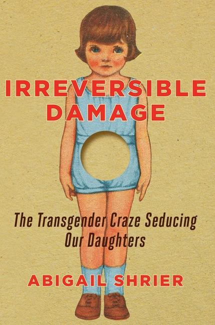

|
JANUARY
|
|
|
|
|
ENTRY 9: January 22. 2025
|
My father chose to read Irreversible Damage, The Transgender Craze Seducing Our Daughters, the year before I came out to him. I have never known my father to
read a book other than Treasure Island, but something about this one seduced him.

I once took a Nazi Culture class from my favorite German professor. The class was almost empty due to the name, but it was actually an exploration of the way that
Nazi propoganda functions. We analyzed Nazi texts and imagery, i.e. 'Nazi Art' which always had this wistful haze, slightly browned, as though it was pulled from
grandma's attic. Nazi art focuses on familial scenes of many white children with rosy cheeks. Paintings with more children (3+) were more likely to be accepted into galleries,
so often there would be 5 to 7. Children were shoved into the frame of the painting, there was always a baby wrapped in the mother's arms. Nazi art is also always
dated, depicting pastoral scenes and machinery that's 100 years older.
I found the comparison to Nazi propoganda posters while I was researching the book, but historian Bill Miller doesn't really go into what it means. I want to take
a second with the cover, because I could already picture the cover when my dad mentioned the book, Irreversible Damage, that's the one with the little girl and
the empty hole. But I hadn't clocked the clothing and hair, unmistakeably 50's, a doll from my dad's childhood.
The hole, seducing, Nazi's were obsessed with reproduction. Healthy children, farms, a father and mother. They needed people to fight the war, therefore,
families were encouraged to reproduce as much as possible.
When is the war beginning? I was supposed to look like her. The photos of me as a child, hung around my grandma's house, look like her. The blue eyes and rosy
cheeks. I was supposed to have children, hang more photos,
Instead, I am a tool that is damaged. I lay, bright blue eyed on the bed, and wait to be filled with a new idea. I'm very susceptible,
The hole makes me a puppet now.
I no longer work.
Even I admit the existance of the hole,
A space which was up until my transition, was constantly filled with someone else's cock
so what would it mean to grow my own?
|
|
ENTRY 8: January 16. 2025
|
It's true I'd been walking all night when I met the woman outside the store on Foster. The strangest road in Portland, the road that cuts sideways across the whole east side, you never
seem to get on the other side of it, except the one outlet where it bends like a worm. That night I'd already walked all over that side, down Springwater
and to the open fields beyond, past the metal recycling plant where the cars are crushed and stacked in piles, I went into a
fenced-in pasture and found a car all burnt out. The books inside were all stuck together from the rain, and since it was summer I could sit in the dark grass
and think. But of course I didn't tell the woman about this, as we sat outside a bar near Foster and she asked me what I'd been up to. I didn't tell her I'd
been walking almost every night, and the days I didn't walk were usually worse. I wondered about this stranger, how it was always another woman I had to speak to.
I just told her I wanted to leave.
and where are you going?
The powerlines strung above us did this thing of disappearing into the flat white sky, the land seemed to stretch out forever, all the directions I could walk at
night. I knew I'd really seen most everything around now. Even the car in the field I'd dismantled, pulling out the seats with pieces of metal and ripping the
fabric. I found what was on the floor and it was only more of those crumpled up books and coins and wet paper, all balled up. The car was nothing too special I found.
I want to go somewhere I don't know so well.
The woman smiled and the trees began to blow softly, it was afternoon and Portland was shaking in the sun, there were lots of roads I knew there, Sandy, Powell,
Broadway, they all ended in blank white sky.
The woman is sitting back in her chair, looking out at the road as the cars come past.
I really like living here, in the center of these rivers, people
are open here, and everyone puts random shit on their porch.
It's true, all the houses had painted signs and colored fabrics that blew around in the wind. I thought of what I'd put on my porch; a blue couch, and a wind
chime.
|
|
ENTRY 7: January 15. 2025
|
A note on the desk,
Your interest in anthropology should help you to understand my turn away from your culture. I imagine myself drawing the scars below my breasts,
a new shape, carved by me and not your imagination. A new sexual dimorphism, you are left out. A new shape unable to reproduce with you, a new
song you do not understand. Soon your son will live with people you refuse to see, crepuscular.
Ann sits hollow in the morning. The walls reflect the glow of the light outside, a dim blue which spreads across the wooden panels. She gazes at her
shoes lined neatly, heels together and waiting to be worn. The house is charged with the movement of water through the pipes, a faint murmur keeping her motionless
on the couch, waiting for something to change. Finally, as the water continues, Ann goes to the shoes and dresses herself.
Light slowly fills the sunken valley, coming over the hill and shining the edges of the tree branches. Ann pictures
the orange glow as she moves through the house. Her thoughts turn to the crepuscular people.
She watched them often from her front window, or the small square one in the bathroom, watched their forms slip from the
buildings across the way, trailing fabric, perhaps like crows, she thinks, black flocks morphing and changing with each other, then scattering as the sky
became white.
|
|
ENTRY 6: January 12. 2025
|
I watch the balloon dance softly in the corner of my room, warmed in the current of a candle, it rises from where it has come to rest, midway up the wall,
light from the candle reflects from the folds, crystal walls shine through a stone, a ruby. My own ghost, my ruby heart rises and sinks down again,
happy in the dark of the evening,
moving without me speaking, turning without my touch, another animal.
|
|
ENTRY 5: January 11. 2025
|
some poems I never sent
I saw green beetles spreading from the belly of the fox in the gutter,
a flourescent rosette
further up the road we came upon another
gem beetle (like a sapphire),
you asked if I could pick it up like that,
bare hands against the road
---
only things that are
A needle and thread pulled through east Germany
three cut lines in the lid of my cup
a sailboat
standing smooth and languid
hair layered over
coal blue fields and poplar rows
the fur of a soft winter rabbit
my lips reflected in the glass
carelessly
evoke yours
---
another, another, December
loosening around the lozenge
this mouthful of silk
goes down like smoke
train at the station, train pulling away
the thoughts that seem true
only last until I come back to
dawn, am I good, am I good
am I with you, am I with you
a band of sunlight
not even warm, yet I can't keep
my eyes from following — to the trim
boards — the carpet on the floor —
and by evening — only 4 —
gone again —
just the last glow of your hands
pulling night over me.
|
|
ENTRY 4: January 9. 2025
|
You once left a pamplet on my dashboard, it asked in all capitals IS HELL REAL? over flames. It's probably still somewhere in the metal cube
they turned my subaru into, perhaps stacked and crushed atop a hundred other cars.
I don't think hell is real, because no place can be all bad. Of course I miss you, but even taking my glasses off
on the train isn't all bad, I just see things blurry. I can pay more attention to the music. In time, any feeling lets you feel something else.
When I was playful I walked down the hill to your house, it was night and snowing. You came and met me at the bridge with red lights, or maybe it was the blue one
I don't remember, but you looked all bundled up. I had snow boots on and we just walked because what else was there?
But I confess I struggled to stay playful when I thought of that tonight, as your ghost suddenly rushed to my side, above a trainyard on the other
side of the world. You were trying to walk me home but I admit, I started to cry.
But you only meant to remind me of that simple night, when there was no reason
|
|
ENTRY 3: January 5. 2025
|
I noticed a Magic Eye book on my friend's counter.
Yeah, M's getting into them, he's really excited that he can see them now.
I'm looking at the first pages, the easy ones, hearts and fish, remembering something,
Have you ever gotten to the second level? Like when you go too deep and the image gets multiplied, and you have to blink and go back?
She doesn't believe me, Second level? You mean seeing a different picture? M comes in,
I think you're seeing it the other way, there's two ways to see the image and I think you're seeing the cross-eyed one. Does the image pop out for you or look
cut into the page?
There's two ways? I've only ever seen the image inverted, and I can never tell what it is.
I wake from a dream back home in Berlin, I'm lying on my couch looking at my cowboy boots sitting on the other side of the room. Something's wrong, my eyes
aren't opening all the way, and my vision is blurred. I feel the door open and my roommate come in,
trying to mouth words, what's going on? the words are slurring,
R: I came in to check on you, you were dreaming, everything is alright.
She looks down at me, scared, holding my hair which is wet to my scalp,
I'm figuring out what happened, was I talking?
R: Yes, you were saying everything. You were talking and sometimes the words didn't make any sense, she demonstrates. Her words are like
mud coming out of her mouth. So I ran in to wake you.
I thank her and try and get up from the couch but I am so tired, I keep sinking back. I'm in the basement of our house and walking, there are my boots on the floor,
but they're horizontal against the wall, am I lying down?
I begin to see things differently, I tell J about my last relationship and she helps me realize something. I always knew it had something to do with control, I knew
they needed to be in control, I knew they were manipulating me, but I couldn't understand why they still didn't want me. I was trying so hard, and I was giving up
as much control as I could, they could have had anything they wanted, why was I not enough?
J points out, They were hollow, they had nothing. They were stealing your words and your ideas. I think I already knew this, but why stop? Why wasn't I interesting
enough to keep taking from?
They needed to be in control. People liked you more than them.
When we'd sleep together I'd still go away, go away from the bed. I could never come unless I went away from the bed, from my body.
I discovered it my last year of
high school, the first time I came. I tried not thinking about my boyfriend at all, I went completely into my mind and imagined my fetish, I removed him completely. It was only when
I was fully away, in a new body I created, alone, that I could climax.
My partner never came back into sex for me, not really. To paths emerged, I could have sex to come or have sex to be with my partner. The paths almost never crossed.
At night, I very rarely imagined a partner, that never felt better than just going into a completely imagined body, constructing everything new.
I talked to my friend about this once, my fetish is separate from sex with a partner. I don't combine them. When I want to come I have to leave my partner and
go into my mind, if I'm trying to come I can't have them involved.
D: I never thought about a fetish being separate from sex, they seem like the same thing you know?
My fetish was something I carved out, a secret that could create an illusion for my partner, I am with you, this is because of you. but it was a trick I
used, because it really only meant I had gone far away.
Of course I wished it wouldn't work that way. What would it feel like to come from the thought of someone I knew?
They'd wanted to talk during sex, but say what?, I didn't know what to say because the words didn't mean anything to me,
I want you to...
Me, knowing, I can't.
My vision blurs, I imagine new walls and new skin, new people that have never existed, begin the same patterns I've used for ten years.
One day, things change.
I stop wanting to think about my fetish. I lie in bed and allow something new, I realize this is what everyone else has felt,
wanting to be with them, for them to see,
for the pressure to come from them, suddenly,
and I see things a new way.
|
|
ENTRY 2: January 4. 2025
|
The powerlines between our houses, stay through the rain.
I never knew you went there too
circled the hum of the wires
to the place beneath the lines
where the sky forms it's own current.
What did you think of? When you'd leave
the yard beyond the trailer going towards
the trees, as though in a dream
did I only imagine the day we walked down the tracks
and found a pit lined with quartz
reflecting each afternoon.
Now the side of that road is where we found
we didn't need to keep driving
that at some point we
could turn to each other
and through your mouth I could return then
wind-torn and thoughtless
|
|
ENTRY 1: January 2. 2025
|
poststroke
I woke in the morning and put my hand to my thigh, finding the indent of my pelvis now caved upwards, the hard shell of an egg laid in the night, the pain,
was unbearable.
I couldn't make out your face at first, like your features were always shifting. When I turned to you in the dark club your face blurred, I realized immidiately
that I could never control you. So I let you lead, filling in every gap I could.
In the hospital, I was afraid and nauseous, the fruit within me was not a new life at this point but only a foreign body. The nurse squeezed the growth and told me
my intestines had broken out of their lining, routine procedure, she rolled the ball with her palm until it was almost flat, I pretended the pain was gone and
went home to lie on the floor.
I don't remember the moment that your face crystalized, when you became the most beautiful thing that I had ever seen. Before this, your body had reminded me of the
caterpillars I used to grow, the ones that didn't eat enough before they pupated, and remained green leather, calloused and small.
When I returned to the hospital I walked bent at the hip, could no longer straighten my thin body. I swept across the street like grass in the wind. A passerby asked me if I
needed a wheelchair but I could not relinquish my legs, my knees, still holding stiff.
The infection turned my body red that night. When I stood up, my chest was wooden, the sheets were my blood, on fire beneath the skin. The doctors began to whisper
above my bed, using the words flesh-eating.
No one's form has moved outside the world like yours. I did not know my eyes could see like that. When your face first felt like God we were sitting in a
bakery, one too nice, our conversation always stuttering, and your eyes lit by sun through the blinds, the softest brown that they were also green.
In the early morning they removed the growth with a scalpel, leaving the wound open for months, to drain. That spring, I could look directly into the hole
left in my body, red walls that led to cherry darkness. No longer inhabited by the routine bacteria, which my body had chosen not to fight.
I never knew my body could give out, become overwhelmed from within. I know now I'll surrender someday. You dulled everyone around me.
|
|
|
|
|